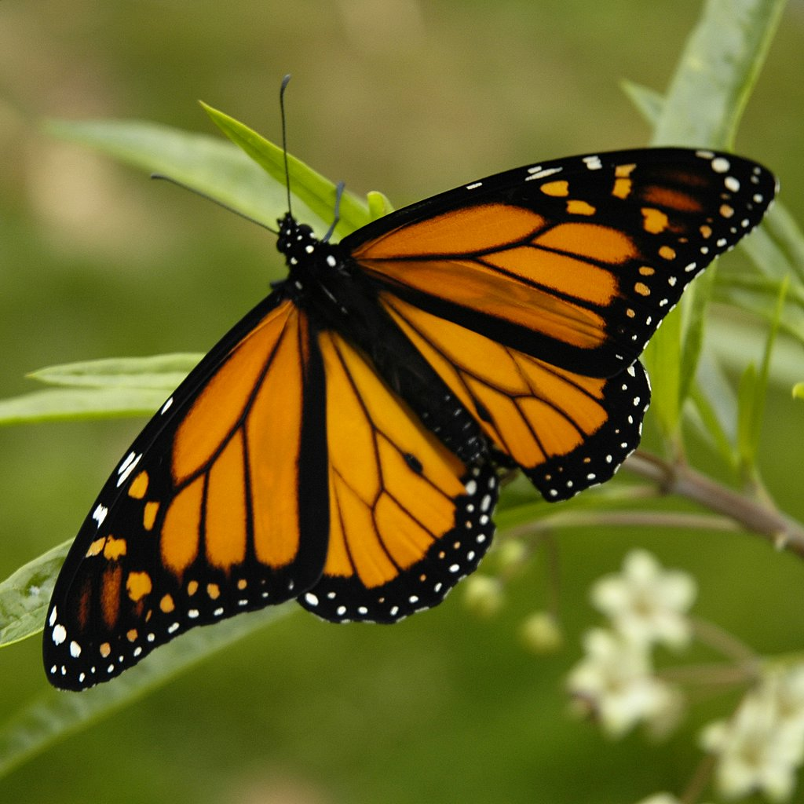

Fluture 1
Acest fluture este cunoscut sub numele de fluturele monarh. Este unul dintre cele mai cunoscute specii de fluturi din lume și este cunoscut pentru migrația sa anuală lungă. Fluturele monarh se hrănește exclusiv cu plante din familia Asclepiadaceae, ceea ce îl face foarte sensibil la pierderea habitatului său natural. Prin urmare, conservarea habitatelor Asclepiadaceae este esențială pentru protejarea acestei specii de fluturi frumoși.